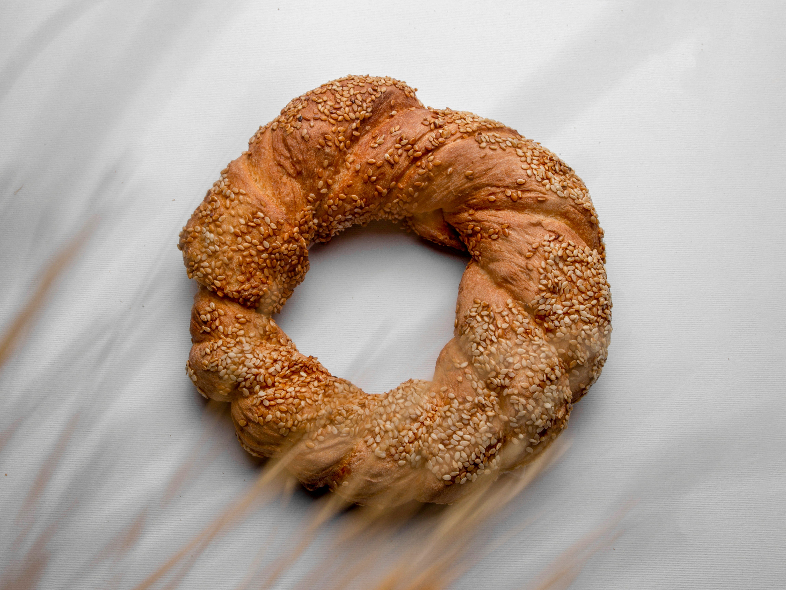

Cornbread Donut Recipe

Chef John's cornbread donuts are baked, not fried. They're slightly sweet and drizzled with a spicy chipotle icing. Barely more effort than whipping up a batch of cornbread, this will be your new favorite donut, and a novel, fun dessert to serve at your next barbecue.
By John Mitzewich
Ingredients
Donut Batter
- 1 cup all-purpose flour
- 1 cup cornmeal
- 1 1/4 teaspoons baking powder
- 1 teaspoon fine salt
- 1/2 teaspoon baking soda
- 1 large egg
- 1/2 cup white sugar
- 6 tablespoons unsalted butter, melted
- 1/2 cup milk
- 1/2 cup buttermilk
Spicy Chipotle Icing
- 1 cup confectioners sugar, plus more as needed
- 1 teaspoon fresh lemon juice or lime juice
- 2 tablespoons milk
- 1/2 teaspoon ground chipotle, or to taste
Directions
- Preheat the oven to 375 degrees F (190 degrees C). Generously butter 2 nonstick donut pans (6 compartments per pan).
- Whisk flour, cornmeal, baking powder, salt, and baking soda together in a bowl; set aside.
- Add egg and sugar to a large bowl; whisk until mixture turns a pale yellow, about 1 minute.
- Whisk in melted butter until combined, then whisk in milk and buttermilk. Add cornmeal mixture and whisk until a thick, sticky batter forms, 2 to 3 minutes, to develop a little bit of gluten so donuts are not overly fragile after baking.
- Spoon or pipe batter evenly into prepared pans, for 12 donuts total. Tap pans on the counter a few times to settle the batter down.
- Bake in the preheated oven until golden on the top and a toothpick inserted in the thickest part comes out clean, about 15 minutes.
- Let cool for 10 minutes; remove donuts from pans to cool completely on a wire rack.
- Whisk confectioner’s sugar, lemon juice, milk, and chipotle together in a small bowl until very thick and smooth. Add confectioner’s sugar, a small amount at a time, to form an icing thick enough to hold its shape when piped.
- Pipe or spread icing as desired over donuts. Let icing set until firm, 30 to 60 minutes.
Home